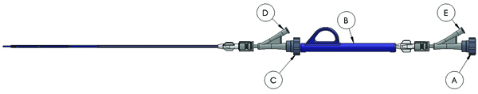

Pre-tunnel graft with ends adjacent to target vein and artery anastomotic sites
using specified tunneling procedure.
Identify target venotomy site and mark with a surgical clamp.
Access the vein using micropuncture kit, insert wire, remove needle and insert
4F sheath.
Exchange 4F sheath for 11F sheath--replace micropuncture wire with 0.018"
wire.
Load VIG delivery system over the wire.
Under flouroscopic guidance, advance VIG over the wire and into vein,
approximately 1 cm past venomy.
Remove blue deployment lock labeled B and position marker band approximately
1cm peripheral to clamp.
Arrow points to marker band.
Loosen T-B valve C and under fluoroscopic guidance slowly advance the
hypotube until it just engages the VIG or
"closes the gap"

Reconfirm the marker band position and remove the 11F sheath from vein.
Deploy VIG under floroscopy using standard "pin and pull" technique, ensuring
the marker bands and venotomy clamp remain in position throughout
deployment.
Remove VIG delivery system and wire, gently grasp and compress protruding end
of VIG to control bleeding and insert VIG into pre-tunneled graft end.